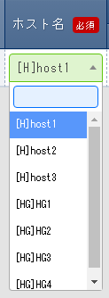

Useres can create parameter sheets that can be configured in the different drivers'"Substitute value automatic registration settings".
In the "Creation target" item found in "Parameter sheet creation" menu group > "Define/Create parameter sheet" menu > "Parameter sheet creation" information tab > Basic information slot, created menus with Parameter sheets (With Host/Operation) and Parameter sheet (With operations) are called Parameter sheets.
By configuring the target parameter sheet and IaC variables in the different drivers' "Substitute value automatic registration settings" menu, users can automatically substitute values that are input into parameter sheets' "Parameter" items.
Users can create data sheets where items can be freely created. Note that Data sheets can not be used by the different drivers' "Substitute value automatic registration settings".
Data sheets can however be used as a CMDB (Configuration Management Database, Structure management database) to manage information in ITA.
More specifically, they can be used as items on a pulldown list.
警告
Note that in order to access them from pulldown lists, the items must have both Required and Unique contraint checked.
1.3. Parameter sheet creation function main functions¶
The Parameter sheet creation function can be divided into the following categories
Web
Web content. Allows users to use the Parameter sheet creation function through the Browser.
Backyard
A resident process that runs on a server independently from the Web content.
1.4. Parameter sheet creation function menu group¶
The menu "Parameter sheet creation" menu group and the belonging menus are as following.
When creating parameter sheets or data sheets in the "Create/define parameter sheet" menu, data is automatically registered to the "Parameter sheet definition list", "Collumn group management" and "Menu item creation information" items.
In order to display hidden menus, restore the target menus in "Role/Menu link list".
For more information regarding restoring and deleting menus, see :doc:` "Exastro-ITA_User_Instruction_Manual_Management_Console" <../it_automation_base/management_console>`
注釈
While the "Create/Define parameter sheets" menu allows users to maintain parameter and data sheets, doing so from the menu limits the user to only maintaining 1 at a time. If the user wants to maintain multiple, they will have to do so using Excel.
Users can create 2 different types of sheets by changing the "Creation target" field in the "Parameter sheet creation information" tab in the :menuselection:` "Parameter creation" menu group --> "Create/Define parameter sheets" menu,`.
Select "Parameter sheet" and execute to create a parameter sheet.
This will create a (**Parameter sheet) **which can be have items configured in the different driver menu groups' "Substitute value automatic registration settings" menu.
Select "Data sheet" and execute to create a data sheet.
This will create a (**Data sheet) **" which can not be used by "Substitute value automatic registration settings" menus.
表 1.12 Parameter sheet and Data sheet differences¶
Creation target selected value
Substitute value auto registration settings
Menu item
Host/Operation relationship
Parameter sheet (With host/operation)
Configurable
Links with specifi
ed "Host/Operation"Items related to "Host name" and "Operation" are automatically applied.
Items other than that can be created freely.
Links with specified "Host/Operation".
Parameter sheet (With operation)
Configurable
Items related to "Operation" are automatically applied.
Items other than that can be created freely.
Links with specified "Operation".
Data sheet
Not configurable
Users can create items freely
Does not link with either "Host" or "Operation".
注釈
Data sheets are intended to be used as reference sources for items that can be selected from pulldown menus
and to be used as a CMDB (Configuration Management Database, Structure management database) for managing data on ITA.
Parameter sheet patterns
There are 5 different patterns in which Parameter sheets can be created.
Parameter sheet using "Host group" and "Bundle"
Parameter sheet using "Host group"
Parameter sheet using "Bundle"
Parameter sheet only
Data sheet
If Parameter sheet is selected, the same menu (Parameter sheet) will be created in the following 3 menu groups.
A. Input
B. Substitute value auto registration
C. Reference
If Data sheet is selected, the same menu (Data sheet) will be created in the following menu.
A) Input
The only menu that can be maintained (Register/Update/Delete/Restore) is the menus in the "A) Input" menu group.
The picture above depicts when the "Creation target" is set to "Parameter sheet".
"Target menu group" selection page
Allows the user to select the target menu groups where the parameter sheet will be created to.
By default, the "Input,", "Substitute value auto registration" and "Reference" menu groups will be selected.
Select the desired menus and click the "OK" button.
Pressing the "OK" button whith the default values set creates a menu for for the "Input", "Substitute value auto registration" and "Reference" menu groups automatically. ( If the "Creation target" is set to "Data sheet", the menu will only be created to the "Input" menu group.)
Clicking the "Select Unique restriction(Multiple items)" button displays the "Unique restriction(Multiple items)" where users can configure combinations of unique items.
図 1.17 When there is only 1 item selected in a pattern¶
図 1.18 If there are multiple patterns with the same item combinations¶
"Access permission role" field
If a role is selected
The seleted role(s) can access the Parameter sheet menus (menus under the "Parameter sheet creation" menu group).
The roles selected in the "Role/Menu link management" menu can access the created menus (Parameter sheets/Data sheets).
If no role is selected.
All roles can access the Parameter sheet menus (menus udner the "Parameter sheet creation" menu group).
Created menus (Parameter sheets/Data sheets) can only be accessed by users that has the System admin role and/or the same role as the user that created the menu.
After the parameter sheet has been created, the user can press the "Parameter sheet creation information" button to move to the "Parameter sheet creation history" menu where they can check if the parameter sheet was created successfully or not.
Data is automatically input to the "Parameter sheet definition list", "Collumn managment", "Parameter sheet item creation information", "Unique restriction (Multiple items) creation information" and "Parameter sheet role creation information" menus.
"Define/Create parameter sheets" menu after creating a parameter sheet
After the user creates a menu, they will be moved to a page resembling the picture above.
It is not possible to edit or create parameter sheets in the view page.
If order to edit or create parameter sheets again, press one of the following button on the screen: "Edit", "Initialize" or the "Reuse" button.
If "Create(New)" button is displayed instead of the "Edit" and "Initialize" buttons, that means that the backyard proccess hasnt finished creating the parameter sheet yet.
Updating the browser after the parameter sheet has been created should display the "Edit" and "Initialize" button again.
The status of the parameter sheet can be displayed by clicking the "Parameter sheet creation history" button.
図 1.21 Button layout when the Backyard process isnt finished¶
図 1.22 Button layout when the Backyard process is finished¶
"Create(New)" button (Before the Backyard is finished)
Clicking the "Create(New)" button moves the user from the view page to the edit page. In the edit page, the user can add and delete items while keeping the data registered in the "Input" menu group. Edit the parameter sheet and press the "Create(Edit)" to save the changes.
"Create(New)" button(After the Backyard is finished)
Clicking the "Create(New)" button moves the user from the view page to the edit page. In the edit page, the user can add and delete items while keeping the data registered in the "Input" menu group.
(It is not possible to edit values configured to existing items and Basic information)
Edit the parameter sheet and press the "Create(Edit)" to save the changes.
"Initialize" button
Clicking the "Initialize" button moves the user from the view pqage to the initialize page. This page allows users to edit values and press the "Create(Initialize) button to recreate the parameter sheet. When recreated, the data registered in the "Input" menu group will be deleted.
"Reuse" button
Clicking the "Reuse" button moves the user to a new creation page where the displayed parameter sheet is used as a template. Make sure to input a new name and display order before creating it.
The parameter sheet name must differ from existing parameter sheets.
"Parameter sheet creation information" button
Moves the user to the "Parameter sheet creation history" for the displaying parameter sheet.
In the Edit page, the user can edit the parameter sheet while keeping the data registered in the "Input" menu group.
This menu allows users to change the following item values: "Item name", "Regular expression", "Description" and "Remarks".
The following items can only have their values edited to a larger number than the previously set value: "Maximum byte size", "Minimum value", "Maximum value", "Line number" and "Maximum file byte number".
If the "Regular expression" item was edited, already registered data will be saved, even if it causes inconsistency error with the new "Regular expression".
If a created item is deleted, data input into that data will also be deleted.
If a new item is added, it will be added with no record registered to it (blank).
This is also the case for records with "Required" and "Unique constraint" checked, meaning that there might be inconsistency errors.
If the target menu groups are changed, the menu will be deleted from non-selected menu groups and will have a new one created to the newly selected menu groups (Data will be saved).
It is not possible to change the setting value for the following items: "Basic information"'s "Parameter sheet name", "Creation target", "Using host group" and "Using bundle".
If the item data is updated in the "Parameter data sheet item creation information" menu and the "Create(Edit)" button is clicked, inconsistency errors might occur.
"Create (Edit)" button
Starts editing the displayed parameter sheet with it's data saved.
注釈
Note that it is not possible to exchange item names between items when editing parameter sheets. Changing the item name might cause errors when saving changes.
"Reload" button
Removes all edited information.
"Cancel" button
Returns it to the state before the "Edit" button was clicked.
In the initialize page, users can edit the parameter sheet displayed.
If the target menu group is edited, the menu will be deleted from non-selected menu groups and will have a new one created to the newly selected menu groups.
It is not possible to edit the "Basic information"'s' "Parameter sheet name".
There are no other edit restrictions for the "Parameter name", but doing so will delete all data registered from the menu in the "Input" menu group.
"Create(Initialize)" button
Recreates the displayed parameter sheet.
注釈
Note that it is not possible to exchange item names between items when editing parameter sheets. Changing the item name might cause errors when saving changes.
"Reload" button
Removes all edited contents.
"Cancel" button
Returns the parameter shet to before the "Edit" button was clicked.
It is possible to use set values to use as filter options in order to narrow down definitions.
注釈
XXXIf the user is not using the default menu groups, make sure to create a menu group that can be used in the "Management console" menu group. (For more information, see :doc:` "Exastro-ITA manual Management Console" <../it_automation_base/management_console>`.)
Tip
Deleting records in the Parameter sheet defintiion list
The Parameter sheet defintiion list menu has the setting information used to create the parameter sheets.
Even if records are deleted from menus in the Parameter sheet defintiion list menu, menus in the Managedment console ▶ Menu list (created menus) will not be changed.
The "Not executed" status is monitored by Backyard, and it uses not executed data menus setting files, executes SQL to create tables and deploys and registers the menu page program.
After a couple of seconds after the status has changed to "Completed", the menu will be added to the menu group.
表 1.17 "Parameter sheet creation information" menu items¶
Item name
Description
Parameter sheet name
Name of the target parameter sheet.
Status
Displays what status of the Parameter sheet creation process.
Not executed：Status before the parameter sheet creation process starts.
Executing：Status where the Backyard is running the parameter sheet creation proccess.
Complete：Status when the parameter sheet creation process has ended successfully
Complete (error) ：Status when the parameter sheet ends in an error.
The following section describes the different patterns of parameter sheets that can be created depending on the values selected in the "Create Parameter sheet" menu group> "Define/Create parameter sheets"> "Parameter creation inforamtion" tab> "Basic information" area.
1.5.5.1. 1. Selecting "Datasheet" in the "Creation target" tab¶
Selecting "Data sheet" for the "Selection target" in the "Define/Create parameter sheets" (or Parameter sheet definition list menu) will create a data sheet when the "Create" button is clicked.
"Define/Create parameter sheet" menu will be displayed.
Depends on the settings of
the crea
ted item.
Depends on the setings of the created item.
Depends on the settings of the
created item.
Remarks
Free description field.
ー
Manual
Maximum length
4000 bytes
注釈
Data sheet are not linked to specified hosts or operations, meaning that Operation items will not be displayed.
注釈
Data sheet menus will not be created under the "Substitute value auto registration" or "reference" menu groups.
1.5.5.2. 2. Selecting "Parameter sheet (With host/operation)" in the "Creation target" tab¶
Selecting "Parameter sheet (With host/operation) as the "Creation target" in the "Define/Create parameter sheets" or "Parameter sheet definition list" menu creates a Parameter sheet.
This menu is for view purposes only. The settings enabled at the time of the specified date and time in the "Operation: Reference date and time" column of the "Display Filter" sub menu will be displayed in the "List" sub menu.
図 1.35 Parameter sheet in the Reference menu group¶
注釈
If the filter button is clicked when the "Operation: Reference date" field in the "Display filter" submenu is blank, only the latest data in the "Reference Date" field for each operation will be displayed in the "list" submenu.
※ If the Operation's "Last executed date/time" contains a value, the "Standard date/time" will take the same value. If the "Last executed data/time" contains no value, it will take from "Scheduled execution date".
1.5.5.3. 3. Selecting "Parameter sheet (With operation)" in the "Creation target" tab¶
Selecting "Parameter sheet (With operation) as the "Creation target" in the "Define/Create parameter sheets" or "Parameter sheet definition list" menu creates a Parameter sheet.
This menu is for view purposes only. The settings enabled at the time of the specified date and time in the "Operation: Reference date and time" column of the "Display Filter" sub menu will be displayed in the "List" sub menu.
図 1.39 Parameter sheet created under the Reference menu group¶
注釈
If the filter button is clicked when the "Operation: Reference date" field in the "Display filter" submenu is blank, only the latest data in the "Reference Date" field for each operation will be displayed in the "list" submenu.
※ If the Operation's "Last executed date/time" contains a value, the "Standard date/time" will take the same value. If the "Last executed data/time" contains no value, it will take from "Scheduled execution date".
1.5.5.4. 4. Selecting "Parameter sheet" in the "Creation target" field and ticking the "Use bundle" checkbox¶
Creating a parameter sheet(either "with host/operation" or "with operation") with the "Use bundle" checkbox ticked will create a parameter sheet in a bundled format.
Creates a data sheet that can be maintained (View/Update/Delete/Restore).
In parameter sheets (with host/operation), it is possible to register multiple parameters for records with registered "host name" and "operation" combinations by using the "Substitute order" column.
In parameter sheets (with operation), it is possible to register multiple parameters for records with registered "operation" combinations by using the "Substitute order" column.
図 1.40 Parameter sheet created under the Input menu group¶
The item list is as following.
Example) If users attempts to register the information above without using bundles①
The user will not be able to register multiple parameters to registered "host name" and "operation" combinations.
図 1.41 Parameter sheet created under the Input menu group¶
注釈
Trying to set 22.22.22.22 and "test2.com" while "11.11.11.11 and "test1.com" is already set for the combination of "host1" "ope_sample1" will cause an error.
Example) If users attempts to register the information above without using bundles
Whle the user can set multiple parameters for a registered combination of "host name " and "Operation" by increasing the number of items the parameter sheet will oriented horizontally and the visibility will be poor.
図 1.42 Parameter sheet created under the Input menu group¶
注釈
The example below creates items up until "IP_Address_3" and "Domain_3". Items later than that does not exist.
As those items does not exist, the user will not be able to register the contents("44.44.44.44" and "test4.com") for "IP_Address_4" and "Domain_4" for the same combination of host name and operation.
In order to create a parameter sheet with repeating items, use bundles (Data sheets cannot use bundles).
1.5.5.4.2. B) Substitute value auto registration menu group¶
This menu is for view purposes only. Contents registered in the "Input" menu group is displayed in the "List" submenu.
This menu is for view purposes only. The settings enabled at the time of the specified date and time in the "Operation: Reference date and time" column of the "Display Filter" sub menu will be displayed in the "List" sub menu.
図 1.44 Parameter sheet created under the Reference menu group¶
注釈
For "Parameter sheet (with host/operation)", if the "Filter" button is pressed while in the "Display filter" submenu when the "Operation:Standard date/time" item is empty, The "Standard date/time" will only display the newest data per host name in the "list" submenu.
For "Parameter sheet (with operation)", if the "Filter" button is pressed while in the "Display filter" submenu when the "Operation:Standard date/time" item is empty, The "Standard date/time" will only display the newest in the "list" submenu.
※ If the Operation's "Last executed date/time" contains a value, the "Standard date/time" will take the same value. If the "Last executed data/time" contains no value, it will take from "Scheduled execution date".
1.5.5.5. 5. Selecting "Parameter sheet" in the "Creation target" field and ticking the "Use host group" checkbox¶
When creating Parameter sheets, select "Parameter sheet (with host/operation) for the the "Creation target" in the "Define/Create parameter sheets" ( or "Parameter sheet definition list") menu and tick the "Use" checkbox for "Use host group" to create a Parameter sheet for host groups.
図 1.46 Parameter sheet created under the Input menu group (Using host group)¶

図 1.47 Pulldown values for host items when using host groups¶
The item list is as following.
注釈
If the parameter sheet is a "Parameter sheet( with host/operation)" and has "Use Host group" activated, the user will be able to select Host groups.
The Host group names will start with [HG], and Host names will start with [H].
1.5.5.5.2. B) Susbtitute value auto registration menu group¶
This menu is for view purposes only. Contents registered in the "Input" menu group is displayed in the "List" submenu.
図 1.48 Parameter sheet created under the Substitute auto registration value menu group¶
注釈
If the parameter sheet is a "Parameter sheet( with host/operation)" and has "Use Host group" activated, the user can check data divided per host from host groups with "Host group function".
This menu is for view purposes only. The settings enabled at the time of the specified date and time in the "Operation: Reference date and time" column of the "Display Filter" sub menu will be displayed in the "List" sub menu.
図 1.49 Parameter sheet created under the Reference menu group¶
注釈
For "Parameter sheet (with host/operation)", if the "Filter" button is pressed while in the "Display filter" submenu when the "Operation:Standard date/time" item is empty, The "Standard date/time" will only display the newest data per host name in the "list" submenu.
| If the parameter sheet is a "Parameter sheet( with host/operation)" and has "Use Host group" activated, the user can check data divided per host from host groups "Host group function".
|
| ※ If the Operation's "Last executed date/time" contains a value, the "Standard date/time" will take the same value. If the "Last executed data/time" contains no value, it will take from "Scheduled execution date".
"Create Parameter sheet" hidden menus
Registering column group in the "Column group management" menu
The "Column group management" menu is hidden by default. This menu allows users to maintain parameter sheets' column group.
|Additionaly, the following items from created menus (Parameter sheets/Data sheets) can also be used if they have both "Required" and "Unique restriction" set to them: "String (single line)", "String (multiple lines)", "Integer", "Decimal", "Date/time" "Date" and "Link".
"Reference items" when using "Pulldown selections
When using "Pulldown selection" items, users can display different items based on the selected value.
If the user has selected "Pulldown selection", users can press the "Select reference item" button to select what menu they want to reference items from.
Tick the checkbox for the target items and press "OK" to input the values into the "Reference item".
Items that can be used as "Reference" items are as follows.
When the "Selection item" is a menu created using the "Create Parameter" function, the other column classes (string(single line), string(multiple lines), Integer, Float, Date/time, Date, Password, File upload, Link) are also target for the selection item.
Creating a Parameter sheet with a "Reference item" selected, the "Register" will only display the Pulldown item field in the "Input" menu group, but pressing the "List/Update" button displays records on the same line as the value configured to the "Pulldown selection".
Displaying a menu created in the "Substitute value auto registration" or "Reference" menu group with the "List" button will also display the "Reference" item values.
"Reference" items displayed in menu groups created in the "Substitute value auto registration" menu group can be used the same as standard values in the different driver's "Substitute value automatic registration settings" menu.

{kind=link}
{kind=link}
{kind=link}
{kind=link}
{kind=link}
{kind=link}

{kind=link}
{kind=link}
{kind=link}
{kind=link}
{kind=link}
{kind=link}
{kind=link}
{kind=link}

{kind=link}
{kind=link}
{kind=link}
{kind=link}
{kind=link}
{kind=link}

{kind=link}
{kind=link}


{kind=link}
{kind=link}
{kind=link}
{kind=link}
{kind=link}
{kind=link}
{kind=link}
{kind=link}
{kind=link}
{kind=link}
{kind=link}
{kind=link}
{kind=link}
{kind=link}
{kind=link}
{kind=link}
{kind=link}
{kind=link}
{kind=link}
{kind=link}
{kind=link}
{kind=link}
)
{kind=link}
{kind=link}
{kind=link}
{kind=link}
{kind=link}
{kind=link}
{kind=link}
{kind=link}
{kind=link}
{kind=link}
{kind=link}
{kind=link}
{kind=link}
{kind=link}
{kind=link}
{kind=link}
{kind=link}
{kind=link}
{kind=link}
{kind=link}
{kind=link}
{kind=link}
{kind=link}
{kind=link}